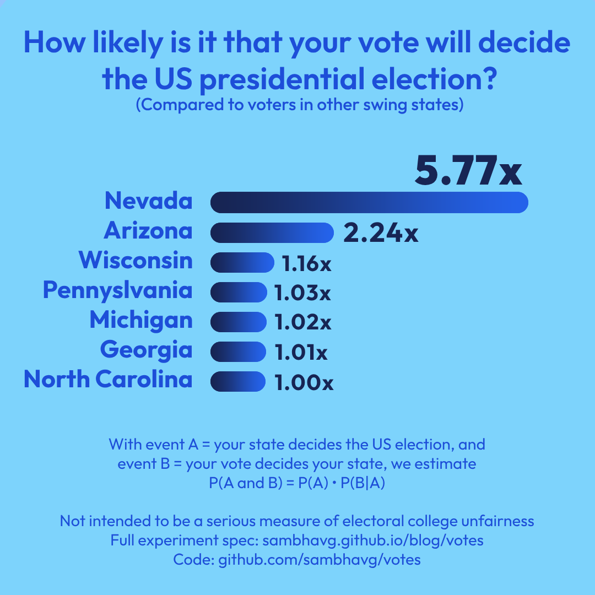

Tipping the Election
September 5, 2024
This is essentially a random thought I had, then decided to code up and see what the code would spit out.
Here’s the thing: if you vote in the US presidential election (ignoring all down-ballot races) and your candidate wins by more than one vote, then technically, your vote was a waste of time. Indeed, you could have stayed home and the election would have turned out exactly the same as it did thanks to your vote.
Obvously, this by itself is not particularly useful or insightful, especially for presidential candidates who aren’t interested in winning each of their states by the minimum possible margin so that all their voters feel maximally valued.
However, it can be extended to the following: in some presidential election outcomes, it’s possible for one state to be near the center for votes cast, and for that state to thus essentially (in some sense) determine the outcome of the entire election (such as Florida in the 2000 election). Thus, if you’re a voter in this state and you help your candidate win by 1, your vote decided the election; indeed, had you stayed home, the outcome of the election would be a stalemate rather than a victory.
In the US we talk a lot about how fair or unfair the electoral college is (usually qualitatively, but sometimes quantitatively as well), and this gives me the opportunity to present a toy metric (for entertainment only) of vote value: compared to the other swing states, how likely is my vote in my swing state to decide the US election?
Assumptions
- The value of your vote is directly proportional to (1) the probability that your state will tip the election, and (2) the probability that your vote will tip the state assuming your state tipped the election.
- In other words, what is the relative probability that your party could not have won the election had you not cast your vote?
- In any election outcome, the state that “tips the election” is found as follows: we order the states by % lead of one party. If (1) one party “barely wins” and (2) they win by a margin of electoral votes that is less than the value of the state that they won by the smallest percentage, that state tipped the election. In other words, the tipping state casts the 270th vote for the winning party while no other states were closer but went to the winning party. Clearly not all elections will have a tipping state - we’ll consider these landslides and ignore them.
Note that the two probabilities are not independent; the higher the chance that our vote will tip the state, the higher the chance that our state will tip the election since it will be among the states with near-50/50 outcomes at the center of the spread. The higher the chance that our state will tip the election, the higher the chance that our vote will tip the state since a state that can tip the election is more likely to get near-50/50 outcomes. We try to roughly control for this in our experiment.
Methodology
- Lock all non-swing states. For this we look at Nate Silver’s polling estimations, which show Pennsylvania, Michigan, Georgia, North Carolina, Wisconsin, Arizona, and Nevada with a less than 4 margin either way (this cutoff is arbitrary and you could run this experiment with all 50 states if you wanted). Virginia has some weird and few recent polls, but we will mark it solid D to keep things simple. We also ignore the split votes in Nebraska and Maine. This is our map.
- Sample an election outcome. Assume all states are independent, so the chance of national polling bias is not higher than any other arrangement of polling biases among the swing states. To sample an election, we sample an outcome for each state. To sample a state, we find Nate Silver’s estimated poll numbers, the average number of people in each poll used (turned out to be ~800 except for Pennsylvania, which had larger polls), and the number of people who voted in 2020 for each state (pulled from here for November 2020). Several aspects of this are rather imprecise, but this whole experiment is very hand-rolled in terms of statistics so I’m not very concerned. This is just for fun.
- If there is a tipping state, observe what range of outcomes in that state would make it a tipping state. For example, anywhere between +.0001 and +3% for the winning party, if the next closest state for the winning party was won by 3%. A tipping state for the winning party would usually be a tipping state for the losing party too (though I’ll roughly ignore deadlock scenarios), so this would turn into some margin like -2% to 3%.
- Compute the probability that this state will be won by 1 vote for the winning party (constant for all states), but divide that by the probability that the outcome will be between -2% and +3%. In other words, we don’t care about the outcomes where the state is outside that range because it wouldn’t have been a tipping state in the first place. Actually, sometimes a small state like Nevada can swap with a big state and the big state will still be the tipping state; the way we check in practice sweeps the state across the spread until it would be a tipping state on either side to find the boundaries.
- Run steps 2-4 for a couple thousand trials (I did 30,000, but my code was pretty slow).
- Take an average of all the tipping vote probabilities for every time each state was a tipping state; multiply that by the probability that the state was a tipping state to get relative numbers for each state. Scale up so that the lowest state has a 1x vote share.
In reality, the value of a vote may be more accurately defined as relative to the inverse of the multiplicative margin over the losing party; if we win by 2x, our vote is worth 50% of what it would be worth in an election where we barely win, for example. This makes sense from a candidate’s perspective, as the value of more votes should smoothly decrease as the predicted margin of victory increases. It also means I don’t get to run this experiment.
Results
I initially ran for 500 trials or so and got a high number for Nevada, around 2.5, while everything else was vanishingly small. I assumed this was a fluke that would go away with a higher sample, but it turned out to only magnify.
Actually, if we print out the intermediate values, we can get more reasoning for why Nevada is so high:
Relative probability that
your vote tips the state
(if the state tips the election):
Nevada: 23.06
Arizona: 7.21
Wisconsin: 3.44
North Carolina: 2.03
Michigan: 2.01
Georgia: 1.78
Pennsylvania: 1.00
Probability that state
will tip the election:
Pennsylvania: 0.29
Georgia: 0.16
Michigan: 0.15
North Carolina: 0.14
Wisconsin: 0.10
Arizona: 0.09
Nevada: 0.07
Relative probability that
your vote will tip the election:
Nevada: 5.77
Arizona: 2.24
Wisconsin: 1.16
Pennsylvania: 1.03
Michigan: 1.02
Georgia: 1.01
North Carolina: 1.00The chance that Nevada will tip the election is the lowest, but the probability that the winner will win by 1 (when Nevada is tipping) is so high that it more than cancels out. Arizona sees a similar but smaller bump. Interestingly, despite having the highest chance of tipping the election (proportional to being the biggest), since Pennsylvania has the smallest (and disproportinately smallest) chance of being tipped by one vote, the value of a Pennsylvania vote by this metric gets squashed.
The small states are helped out by the conditioning we do on the fact that we only care about tipping votes with respect to the outcomes where the state is a tipping state. Even though the state ends up at the center less often, when it does, it seems to have its outcomes squashed to a thinner set compared to the wider states which can afford a wider range of outcomes while still managing to hold the spotlight of tipping the election. This squashing effect appears to more than counteract the contrasting negative of not holding the spotlight as often.